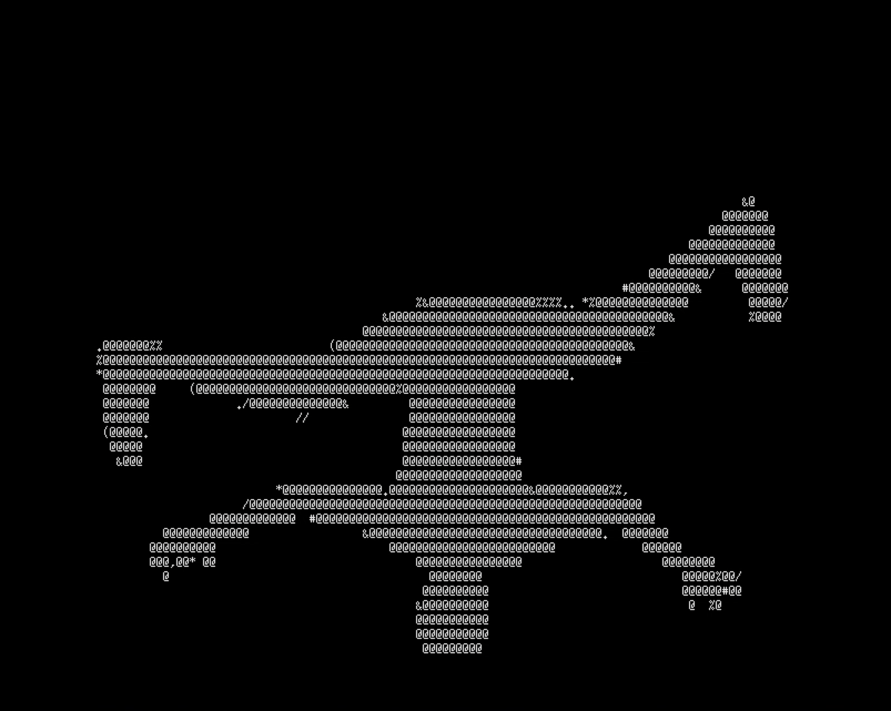

Dance Visualizer
This dance visualizer program allows the user to create and view a dance sequence as an ASCII animation. Developed as an experimentation of ASCII art, this project aims to create an interaction between dance and programming. The user of this program can select from a library of dance moves and genres, optionally defining time spans for each move she selects. The final sequence is then played out on the screen in ASCII characters.

Process
To develop this C++ program, I built classes of different dance styles that contained libraries of dance moves. Each move is represented by a series of ASCII image files that play out like an animation. To create these images, I took photos of a dancer performing each dance move. I extracted an image of the dancer from each photograph and converted it to an ASCII image, building a film-like collection of images to display.

I used the photos that I took to generate ASCII-art image files of each dance move.
Once compiled, these ASCII files became short animations of each move being performed.